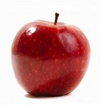

A alimentação é muito importante para todo ser vivo. Alguns alimentos são ricos em proteínas, cálcio, fibra etc..
vamos citar algumas frutas essenciais para o dia a dia.
O morango é uma fruta com baixa caloria e agradável ao paladar por ser adocicado, apesar da acidez. Por essa razão, agrada pessoas de todas as idades.
 As maçãs ajudam a prevenir doenças oculares como degeneração macular, catarata e glaucoma. O alimento também torna os olhos mais fortes e melhora a visão, além de contribuir no tratamento da cegueira noturna. .
Essas frutas são aliadas de quem deseja perder peso de modo saudável. Para começar, uma bananamédia não possui uma grande quantidade de calorias — ela tem apenas 100 calorias e ainda consegue ser nutritiva e forrar o estômago
O mamão é uma fruta rica em vitamina C, vitamina A e betacaroteno, nutrientes com propriedades antioxidantes, anti-inflamatórias e imunomoduladoras, ajudando no controle da pressão arterial, na redução do colesterol sanguíneo e no fortalecimento do sistema imunológico.
Ajuda a manter os níveis de açúcar no sangue e combate o colesterol ruim
Controle da pressão arterial e prevenção de doenças cardiovasculares
Correção da acidez excessiva do organismo e melhora do sistema digestivo
Estímulo do sistema circulatório, imunológico e cognitivo
Rico em antioxidantes
A fruta auxilia na absorção de licopeno e betacaroteno, carotenoides que são absorvidos pelo organismo na presença da gordura que o abacate fornece, Melhora o metabolismo, reduz o apetite e ajuda a emagrecer.
O açaí é um fruto de origem amazônica cheio de nutrientes e benefícios para a saúde. Ainda assim, suas formas de consumo podem torná-lo calórico, o que é uma desvantagem para quem não deseja engordar.